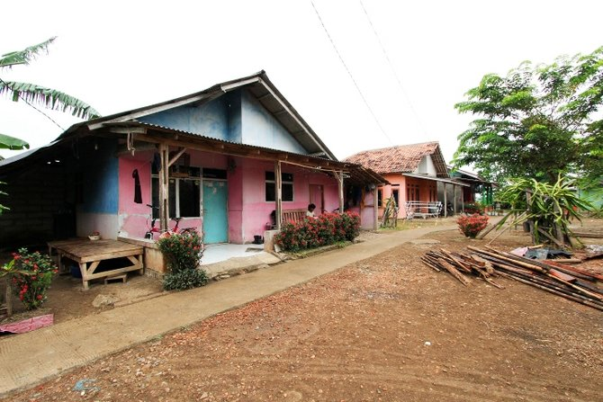
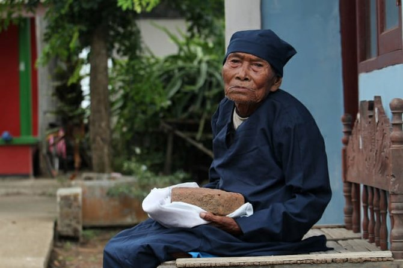
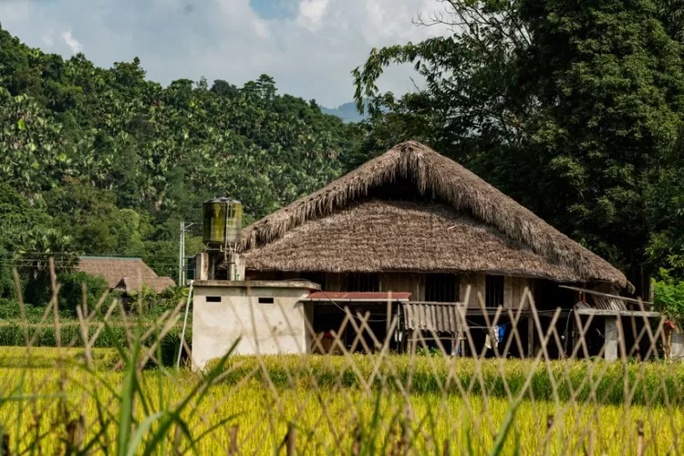
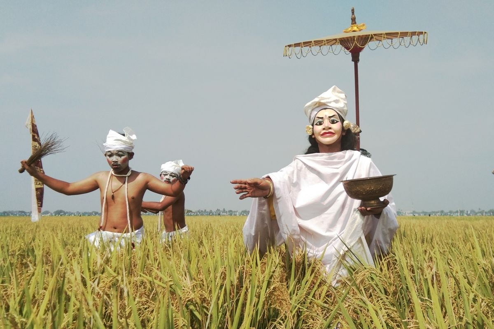

Pun sapalih ti Kecamatan Karawang Kulon, Kabupatén Karawang, Jawa Barat, Kampung Salapan ngagaduhan sajarah anu unik jeung pinuh ku misteri. Kampung ieu kawentar ku jumlah padumuk anu salawasna tetep, nyaeta salapan kulawarga (KK). Ngaran "Salapan" asalna ti basa Sunda anu hartosna salapan. Tadina, kampung ieu ngaranna Kampung Babakan. Tapi, dina taun 2010, ngaran éta dirobih jadi Kampung Salapan kusabab kapercayaan masyarakat satempat yén jumlah padumuk teu meunang langkung ti salapan KK. Lamun jumlah kulawarga nambahan, dipercaya bakal mawa musibah. Salian ti jumlah padumuk anu salawasna tetep, Kampung Salapan ogé ngagaduhan kaunikan séjén. Dina taun 2009, warga satempat mendakan bongkahan batu bata anu diduga gaduh nilai sajarah ti abad ka-2 atawa ka-3. Pamanggihan ieu narik perhatian tim arkeolog nasional anu engké nalungtik sareng ngonfirmasi yén batu bata éta gaduh nilai sajarah. Kampung Salapan tetep jadi tempat anu pikaresepeun pikeun didatangan kusabab kaunikan sareng misterina. Upami anjeun resep pikeun terang langkung seueur, anjeun tiasa maca artikel lengkepna di dieu.
Struktur adat Kampung Salapan di Karawang, Jawa Barat, ngagambarkeun nilai-nilai tradisional jeung kapercayaan masarakat satempat. Di handap ieu sababaraha elemen penting dina struktur adat Kampung Salapan.
Sesepuh Kampung
Sesepuh atawa kolot kampung boga peran penting dina ngajaga jeung ngamalirkeun adat istiadat sareng tradisi kampung. Aranjeunna dihormat jeung dianggap minangka pangajaga nilai-nilai budaya.
Kepala Keluarga
Unggal kulawarga di Kampung Salapan boga kepala keluarga anu tanggung jawab kana kasejahteraan sareng kaharmonisan kulawargana. Jumlah kepala keluarga di kampung ieu salawasna tetep salapan, saluyu jeung kapercayaan masarakat satempat.
Ritual Adat
Kampung Salapan boga rupa-rupa ritual adat anu dilaksanakeun pikeun ngajaga kasaimbangan jeung kaharmonisan sareng alam ogé karuhun. Ritual-ritual ieu ngalibetkeun sakabeh anggota masarakat sarta dipingpin ku sesepuh kampung.
Gotong Royong
Semangat gotong royong pohara kuat di Kampung Salapan. Masarakat silih bantu dina rupa-rupa kagiatan, sapertos ngawangun imah, ngabersihan lingkungan, jeung ngarayakeun acara adat.
Kepercayaan jeung Mitos
Kepercayaan jeung mitos mawa peran penting dina kahirupan sapopoe masarakat Kampung Salapan. Salah sahiji kapercayaan anu kuat nyaéta yén jumlah kulawarga henteu meunang langkung ti salapan, sabab dipercaya bakal mawa musibah lamun dilanggar.

Pito
Petuah Kampung boga peran penting dina ngajaga jeung ngalestarikeun adat istiadat sareng tradisi kampung. Salian ti éta, aranjeunna ogé tanggung jawab dina mingpin rupa-rupa upacara adat sareng kagiatan masarakat. Ngeunaan istilah "menteri" dina kontéks kampung adat sapertos Kampung Salapan biasana henteu dianggo. Tapi, aya sababaraha peran penting sanés anu dicekel ku anggota masarakat, sapertos *Sesepuh Kampung* anu fungsina salaku penasihat sareng penjaga nilai-nilai budaya.
Jumlah Imah
Ngan aya salapan imah di kampung ieu
Unggal imah dihuni ku hiji kulawarga
Jumlah imah teu meunang nambahan, lamun aya kulawarga anyar, salah sahiji kulawarga kudu kaluar
Arsitektur Imah
Wangunan panggung kalayan kolong sakitar 40-60 cm
Ngagunakeun suhunan tradisional Julang Ngapak
Wangunan Séjén (Dumasar kana Tradisi Sunda)
Leuit (lumbung paré) pikeun nyimpen hasil tatanén
Balé patemon pikeun kagiatan sosial jeung upacara adat
Kaunikan Kampung Salapan
Katelah ogé salaku Babakan Nyongclo
Lokasina terpencil, jauh ti keramaian
Can kahontal ku pasokan listrik
Dijaga kasaimbangan antara manusa jeung alam
Aturan anu aya di Désa Salapan, Kabupatén Karawang, Jawa Barat, ngawengku:
Désa Salapan ngan bisa dicicingan ku salapan kapala kulawarga
Masarakat Désa Salapan ngajungjung ajén kajujuran
Masarakat Désa Salapan ngajungjung ajén disiplin
Masarakat Désa Salapan miboga toleransi anu luhur
Upacara Nyalin
Upacara Nyalin di Kampung Salapan diadain pikeun ngalindungkeun masarakat, kusabab dipercaya bakal mawa musibah lamun jumlah padumuk teu meunang langkung ti salapan
Tradisi Ngabungbang
Tradisi Njambangbang nyaéta tradisi henteu saré sapeuting di tempat terbuka unggal malem Saptu
Sunda Wiwitan
Kapercayaan ieu dumasar kana kepercayaan ka roh karuhun, alam semesta, jeung ajaran spiritual tradisional Sunda. Jalma-jalma anu ngajalanan kapercayaan ieu yakin yén alam téh hirup jeung kedah dijaga supaya tetep saimbang.
Tri Tangtu di Buana
Ratu Panggung → Pamingpin spiritual/adat anu nungtun kapercayaan.
Ratu Dunia → Jalma anu ngayakeun aturan kahirupan sapopoé.
Ratu Gungun → Nu ngajaga kaharmonisan sosial jeung gotong royong.
Ngajaga Alam salaku Bagian tina Kapercayaan
Kampung Salapan percaya yén alam téh bagian tina kahirupan. Ku kituna, aya aturan anu ketat ngeunaan ngajaga leuweung, cai, jeung taneuh. → "Leuweung ulah dirusak, cai ulah dicemar, taneuh ulah diala sambarangan."